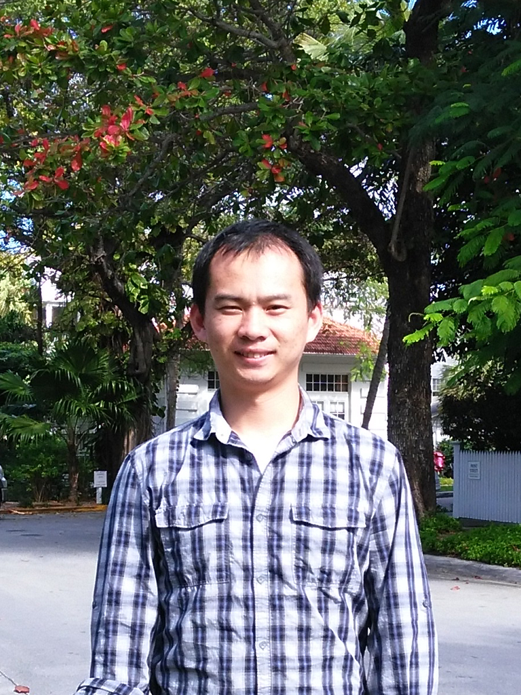

|  | Liang ZhangPh.D, IEEE Member 


|
Short Bio
- Liang Zhang [S’15, M’20] (lz284 AT njit.edu) received his M.S. degree in information and communication engineering, University of Science
and Technology of China (USTC),
China, in 2014, and his Ph.D. degree in electrical engineering from New Jersey Institute of Technology (NJIT),
USA, in 2020. He is a recipient of the Hashimoto Prize in NJIT
for the best doctoral dissertation in 2020, the Travel Grant Award from IEEE
GLOBECOM in 2016, the Best Paper Award at IEEE ICNC in 2014, and the prize of the National Sch-
olarship of Graduate Students in China in 2013.
Honors and Awards
- 2020 Hashimoto Prize ($5000) for Best Doctoral Dissertation in New Jersey Institute of Technology
- 2016 IEEE Globecom 2016 Student Travel Grant (NFS Travel Grant), $1000
- 2014 "Best Paper Award" of IEEE International Conference on Computing, Networking and Communications (IEEE ICNC) (Top 2%)
- 2014 Outstanding Graduate Student of USTC (Top 10%)
- 2013 National Scholarship of Graduate Students (Top 5%, RMB 20000, the highest honor for master students in China)
- 2011 ~ 2014 Full Tuition Scholarship for Three Years’ Study in USTC
Working Experience
1. Postdoctoral Research Associate, 09/2020- present.
2. 05/2016~08/2016, Summer Internship at the Department of Fixed Access Network, Futuewei Technologies, Bridgewater, NJ, 08807, USA.
Worked on the channel bonding of the 100 EPON and NG-PON2 (Supervisor: Dr. Yuanqiu Luo).
Research Interests
Wireless Communications, Full Duplex, UAV, Mobile Edge Computing, Datacenter Network.
Education
- Ph.D. 09/2014 ~ 05/2020 , Electircal and Computer Engineering (ECE), New Jersey Institute of Technology (NJIT), Newark, 07102, USA.
Advisor: Distinguished Prof. Nirwan Ansari
Dissertation: “Communications with Spectrum Sharing in 5G Networks via Drone-mounted Base Stations”, 04/20/2020.
- M.S. 09/2011 ~ 06/2014, Information and Communication Engineering, University of Science and Technology of China (USTC), Hefei, 230000, China.
Advisor: Prof. Zuqing Zhu
Dissertation: “Investigation of Dynamic Resource Allocation in Inter-Datacenter Networks over Optical Infrastructure”, 05/2014.